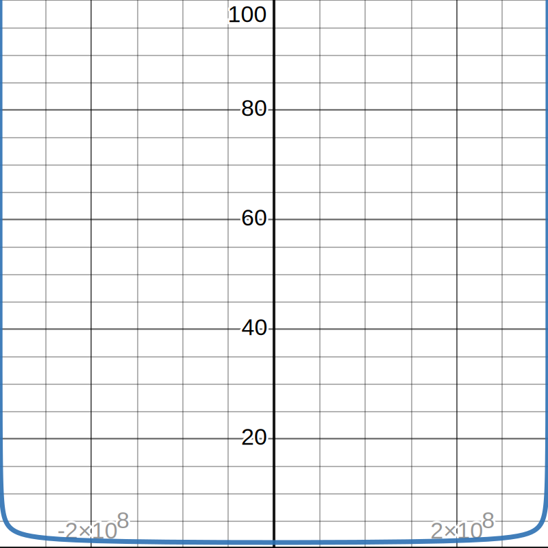

Part II

The Equation
This physics equation shows how long an interval of time for someone moving with velocity x m/s will appear to a stationary observer. It's from Newton's theory of general relativity. In the example graph, I set the time interval to 1, so it also shows the multiplier at that specific velocity.
There is a vertical asymptote at positive and negative 3*10^8, which is the speed of light. Because it's not possible to surpass the speed of light, the function is undefined past +/- 3*10^8.